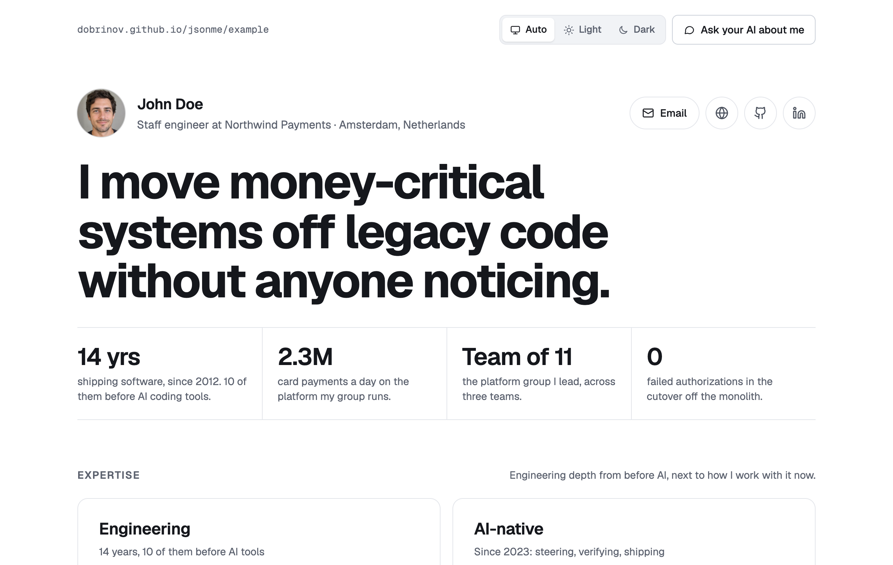
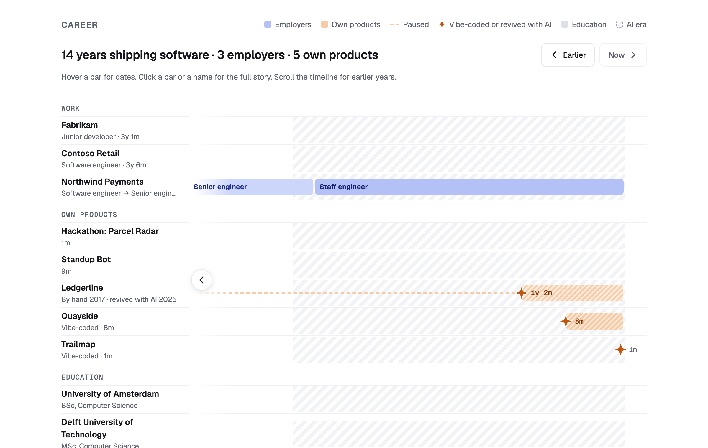
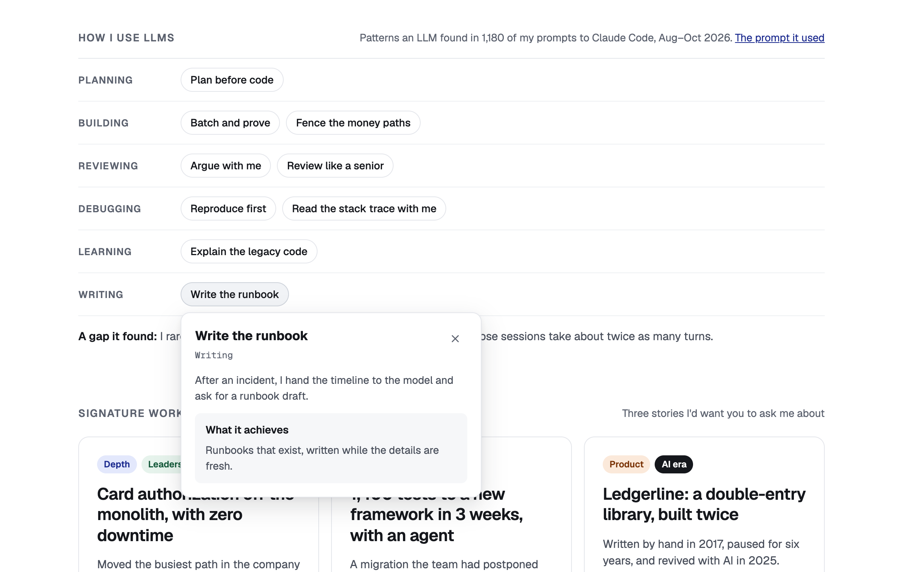

CV and blog for software developers
Your CV, in your own repo.
{me} turns a me.json file and a folder of Markdown posts into a CV and blog, published by a GitHub Action. No server, no account, nothing to pay. Built to show what an AI can't write for you.

Made for developers in the AI era
Anyone can generate a CV full of keywords now. A {me} CV is built around the things that are hard to fake: what you shipped, how you think, and how you work with AI.
Proof over keywords
Every area of expertise needs one line of proof. Three signature stories carry the problem, what you did and the outcome, with links to the evidence.
Before AI, next to AI-native
Engineering built before AI tools sits next to how you work with AI now: what you delegate, what you own, and how you verify it.
Overview first
A headline, four facts and a career line fit on one screen. Readers drill down into roles, stories and products only if they want to.
A career line that tells the story
- One row per employer, product and schoolHover for dates, click for the details. It opens at the present and scrolls back through the years.
- Growth inside one companySeveral roles at one employer open as a growth path, with stories filed under the role they belong to.
- Side products countProducts you built yourself get their own rows. A ✦ marks the ones vibe-coded or revived with AI.
- The AI era, markedA hatched band shows where the AI era begins, so readers see which work came before it.

How you use LLMs, found in your own prompts
- Found, not claimedAn LLM reads the prompts you actually wrote, counts your habits and names them: pseudocode as the prompt, asking why before accepting, making the agent test its own work.
- Overview firstOne row of patterns per goal: planning, building, reviewing and more. A click shows what you do and what it gets you.
- Runs where your prompts areHand the patterns prompt to your own agent. Your prompts never leave your machine; you choose what goes on the CV.
- Optional, like everything about AINo AI story? Leave it out. A CV without AI content shows no AI section, no AI era and no “before AI”.

Readable by people and by AI
Recruiters paste CVs into an AI anyway. {me} publishes a version made for that next to the page for people, and a button that hands a reader's AI the right prompt.
index.htmlThe CV, in light and dark, readable on a phone and printable.
cv.mdThe whole CV as Markdown, for an AI to read.
llms.txtTells AI agents where everything is.
me.jsonThe source data, with a JSON Schema.
posts/Your blog, from Markdown files.
feed.xmlAn RSS feed of your posts.
Get started
You need a GitHub account, git and Node 20 to try it locally. Your site goes live at your-name.github.io/repo.
-
Copy the template into a new folder
It holds a starter
me.json, a sample post and the publish workflow.git clone --depth 1 --branch v1 https://github.com/dobrinov/jsonme.git /tmp/jsonme cp -R /tmp/jsonme/me/template my-cv && cd my-cv -
Write your
me.jsonThe quickest way: give your AI our prompt and your LinkedIn PDF, then paste the result to check it and preview your CV in the browser. Save it as
me.jsonin the folder. To edit by hand, your editor autocompletes it from the schema, and you can check and preview it locally:node /tmp/jsonme/me/src/build.mjs --check # validate me.json node /tmp/jsonme/me/src/build.mjs --out _site # then open _site/index.html -
Push it to GitHub
The workflow builds the site on every push to
mainand turns on GitHub Pages on the first run.git init -b main && git add . && git commit -m "My CV" gh repo create my-cv --public --source . --push
On GitLab, the template's .gitlab-ci.yml publishes to GitLab Pages instead.
The format
me.json is JSON Resume plus a few fields for what matters now. Only your name is required. The full list is in the README.
{
"$schema": "https://raw.githubusercontent.com/dobrinov/jsonme/main/me/schema/v1.json",
"basics": { "name": "Ada Lovelace", "label": "Staff engineer at Analytical" },
"headline": "I make slow systems fast without rewriting them.",
"facts": [{ "value": "12 yrs", "label": "shipping software" }],
"expertise": {
"engineering": [{ "name": "Performance", "proof": "p99 from 2s to 200ms on the checkout path" }],
"ai": [{ "name": "Agentic coding", "proof": "Shipped a migration tool with Claude Code, reviewed every diff" }]
},
"llms": { "patterns": [{ "name": "Pseudocode as the prompt", "goal": "planning", "achieves": "…" }] },
"highlights": [{ "title": "…", "problem": "…", "did": "…", "outcome": "…" }],
"work": [{ "name": "Analytical", "position": "Staff engineer", "startDate": "2021-03" }],
"projects": [{ "name": "Engine", "startDate": "2026-02", "vibecoded": true }]
}